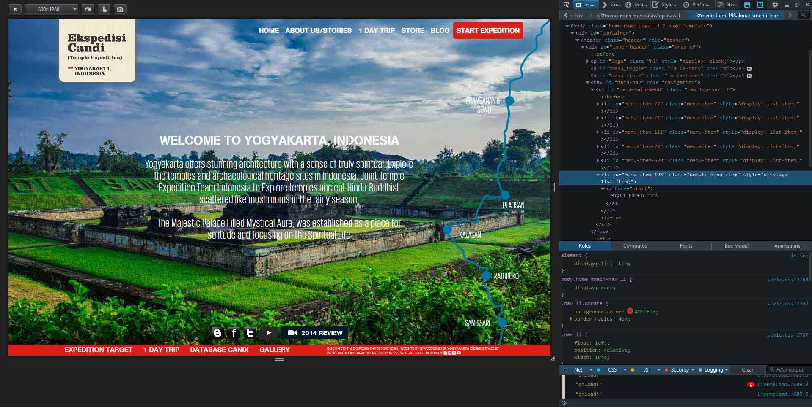

Sugeng Rawuh
Punika Desainer Graphis lan Web Desainer Responsif saking Yogyakarta, Indonesia. Gawe web ringan lan cepet kanggo panganggo saka sembarang padha ngakses: desktop utawa piranti seluler.
Web kudu responsif
Saiki internet iku diakses saka piranti beda karo resolusi layar beda-beda. Kanggo nggayuh pangguna desktop, tablet, utawa piranti seluler ing wektu sing padha ora bisa nyang-nyangan maneh website kudu tampilan responsif. Ing 24-IDWEBDesigner duwe aturan sing website kudu "mobile disik".
Iki ngidini contone nggunakake rancangan canggih front-end framework kaya Bootstrap
Web mestine kudu cepet
Saben uwong kepengin web cepet. IDWEBDesigner bisa bantuan nggawe website luwih cepet, luwih irit, lan nambah pengalaman kanggo pangguna web. Nggunakake Google Kaca cepet lan Yahoo! YSlow kanggo njelasno kinerja situs lan banjur menehi rekomendasi utawa njupuk tindakan apa waé kanggo mbenerake masalah.
Ing goal pokok yaiku kanggo ngasilaké website cepet!
IDWEBDesigner Store
Official Website
Tim Ekspedisi Candi Indonesia
Yogyakarta offers stunning architecture with a sense of truly spiritual. Explore the temples and archaeological heritage sites scattered like mushrooms in the rainy season.
Ekspedisicandi.comKonsep Baru Ekspedisi Candi
Mengenalkan karya arsitektural peninggalan budaya abad VII - X (masa klasik) yang megah. Mempelajari dan memahami tentang berbagai dimensi kehidupan mereka zaman dulu. Lihat Konsep Baru Ekspedisicandi.com
Setting Viewport
Ini adalah aturan dasar membuat web responsif. Halaman yang dioptimalkan untuk berbagai perangkat harus menyertakan meta viewport di head dokumen. Sebuah meta tag viewport memberikan petunjuk kepada browser bagaimana mengontrol dimensi dan skala halaman. Bahkan untuk halaman dasar, kita harus selalu menyertakan viewport meta tag. Viewport adalah komponen yang paling penting yang kita butuhkan untuk membangun pengalaman multi-device. Tanpa itu, situs tidak akan bekerja dengan baik pada perangkat mobile. Viewport menunjukkan kepada browser bahwa halaman perlu disesuaikan dengan ukuran layar. Ada banyak konfigurasi untuk mengontrol viewport. Biasanya IDWEBDesigner menggunakan cara ini:
<meta name="viewport" content="width=device-width, initial-scale=1">
Viewport diletakkan di head dokumen dan hanya perlu dinyatakan sekali. Atau kita dapat melakukannya dengan menggunakan teknologi yang disebut Media Query.
Responsif dengan semua perangkat
IDWEBDesigner membuat web responsif multi-device yang bekerja dengan baik di semua jenis perangkat yang memiliki kemampuan yang berbeda, ukuran layar yang berbeda dan metode interaksi yang berbeda. Web harus dapat diakses di semua perangkat dari ponsel layar kecil sampai monitor layar lebar. Setiap perangkat memberikan pengalaman yang unik. Sebagai desainer web, kami memiliki alat-alat yang canggih untuk membuat dan mengujicobakan itu semua. Mengikuti prinsip-prinsip pembangunan web “mobile first”, IDWEBDesigner Yogyakarta selalu memulai dengan viewport sempit pada ponsel untuk pengalaman pertama, kemudian ke skala hingga kelas perangkat yang lebih besar dengan membuat viewport lebih luas, dan akhirnya memberi penilaian apakah desain dan tata letak terlihat benar, dan memastikan halaman beradaptasi dengan layout yang berbeda.
Kami memiliki desainer dengan keahlian bagaimana mengubah web desktop tradisional menjadi cepat, efektif dan memiliki pengalaman multi-device. Membangun pengalaman web yang bagus pada perangkat mobile menggunakan alat-alat canggih untuk menguji kinerja setiap halaman website.
Membuat Web Responsif dangan BootstrapMembuat Web cepat di semua perangkat
Developers tools PageSpeed Insight
PageSpeed Insight mengukur kinerja halaman untuk perangkat mobile dan perangkat dekstop. Cara kerjanya dengan mengambil url dua kali, sekali dengan user-agent mobile, dan sekali dengan user-agent desktop. PageSpeed Insights mengukur berapa waktu yang dibutuhkan untuk membuka halaman web secara penuh. Namun, karena koneksi jaringan bervariasi, PageSpeed Insights hanya mempertimbangkan aspek kinerja halaman diluar koneksi jaringan, seperti konfigurasi server, struktur HTML halaman, dan penggunaan dari sumber daya eksternal seperti gambar, JavaScript, dan CSS; meski penilaian akhir kinerja halaman tetap saja tergantung pada koneksi jaringan pengguna.
developers.google.com/speed/pagespeed/insightsMobile friendly
Proses parsing HTML, CSS, dan JavaScript tergantung sumber daya yang dimiliki pengguna, tergantung juga pada spesifikasi dan kecepatan perangkat mobile pengguna, dan pastinya kompleksitas halaman yang dikunjungi. Semakin besar besar dan semakin kompleks menjadikannya membutuhkan waktu lama untuk menampilkan sebuah halaman, dan akibatnya website terasa lambat. Seringkali itu bukan kesalahan jaringan internat, tapi kesalahan developer web. Misalnya memasang kode Javascript yang rumit dan tidak efisien, atau struktur halaman yang tidak sistematis.
IDWEBDesigner Yogyakarta telah mempelajari hal ini. Kami memiliki sebuah teknik dasar bahwa konten (teks, CSS, Javascript, gambar, dsb) yang ada di dalam halaman website tidak harus terdownload semuanya sebelum ditampilkan di browser. Kami memiliki aturan, pengguna harus mulai berinteraksi dengan halaman secepat mungkin, struktur halaman dan konten utama ditampilkan terlebih dahulu, sisa halaman dapat disampaikan secara progresif di latar belakang.
Tes ini menganalisis URL dan melaporkan apakah laman memiliki desain yang mobile-friendly atau tidak. Pengujian Situs Mobile-Friendly dapat dilihat pada tautan berikut:
google.com/webmasters/tools/mobile-friendlyGraphics Design
24 x 7 Service
Contact Us
Alamat Yogyakarta
Jl. K.H. Wahid Hasyim No. 3 Gaten Condongcatur
Depok Sleman Yogyakarta 55283
24-IDWEBDesigner Support
Website: designer.web.id
Email farid@designer.web.id
+62 8139 2541 831